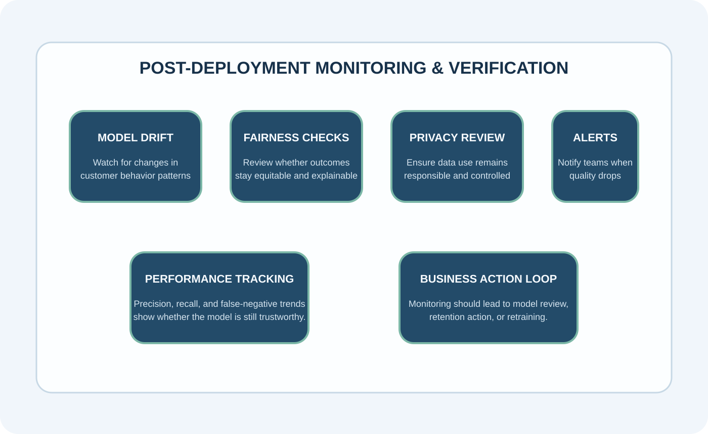
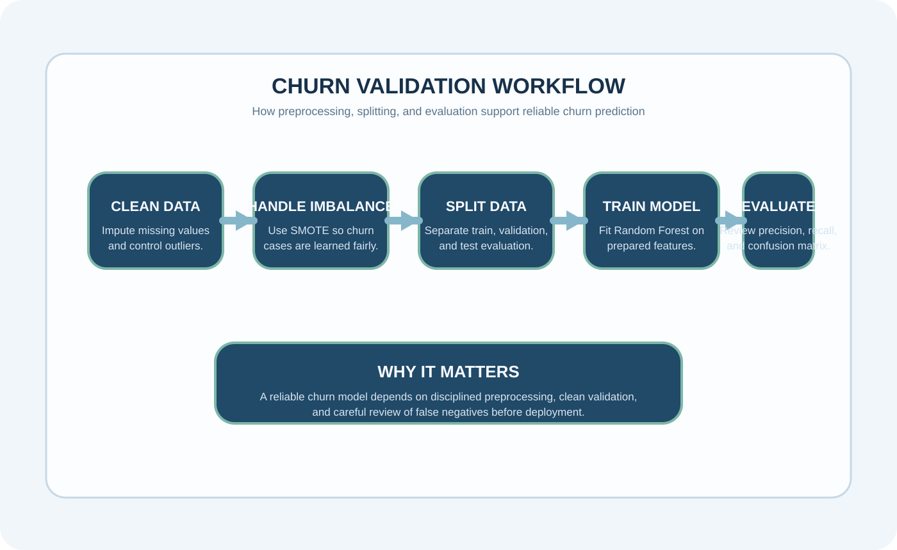

Artifact Information
This artifact presents an e-commerce churn prediction project through the lens of model validation and verification, with emphasis on reliability, evaluation metrics, and responsible post-deployment monitoring.
Introduction
The goal of this project was to predict customer churn for a growing e-commerce platform so that at-risk customers could be identified early and supported through retention strategies such as targeted offers.
The artifact emphasizes that a successful machine learning solution is not defined by accuracy alone, but by how carefully the model is validated before being trusted in a real business context.
Description
The project used customer behavioral and transactional features to predict whether a customer was likely to churn. Data preprocessing included handling missing values, controlling outliers, and balancing classes with SMOTE so that the model would not simply overpredict the majority class.
A Random Forest Classifier was selected because it handles non-linear relationships well and offers stronger protection against overfitting than a single decision tree. The model was validated using a 70/15/15 training, validation, and test split so that tuning could happen without leaking information from final evaluation.


Objective
- Predict customer churn before disengagement becomes final
- Reduce the business cost of missed churn cases
- Validate the model carefully before deployment
Process
- Handled missing values with median imputation for tenure and warehouse-to-home distance
- Managed outliers in yearly spending by capping extreme values at the 99th percentile
- Applied SMOTE to address class imbalance in churn outcomes
- Used a Random Forest Classifier for non-linear churn behavior
- Split the dataset into training, validation, and test sets using a 70/15/15 strategy
- Evaluated the model through precision, recall, and confusion-matrix results with special attention to false negatives
- Considered bias, fairness, privacy, and post-deployment monitoring as part of the validation plan
Tools and Technologies Used
Value Proposition
This artifact shows that building a useful machine learning solution means validating it carefully, monitoring performance over time, and understanding business risk when errors occur.
Unique Value: Connects churn prediction with validation, ethics, and business-focused reliability.
Relevance: Useful for AI, analytics, and decision-support roles where model trust and performance matter.
Reflection
This project strengthened my understanding that a successful model is not just one with high precision. It must also use a proper validation strategy, reduce costly false negatives, and account for fairness, privacy, and model decay after deployment.
References
AssemblyAI. (2022). How to evaluate ML models; Galaxy Inferno Codes. (2022). Validation data: How it works and why you need it; Misra Turp. (2023). Why do we split data into train, test, and validation sets?; Underfitted. (2022). The confusion matrix in machine learning.